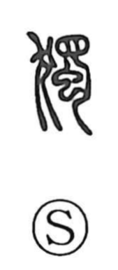

独

Uncategorized
Kun: hitori, tada | On: doku, toku
alone ・ oneself ・ only
Explanation
Originally written 獨, this is a phono-semantic graph: 犭 marks the animal realm, while 蜀 supplies the sound and also depicts a male beast, with the inner 虫 element drawn to suggest the genital organ. Because male animals are apt to range apart from the herd, the figure naturally came to express being set off by oneself, a sense later applied to people as “alone” or “oneself.” The phonetic force of 蜀 is seen in other graphs as well, such as the “bow-case” character read toku. By loan, 独 also came to mean “only,” sometimes standing in for characters like 特 and 徒, hence the kun reading tada.